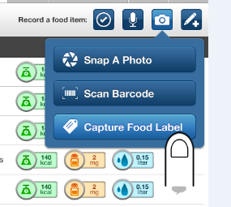
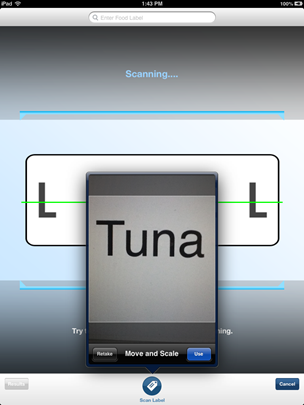
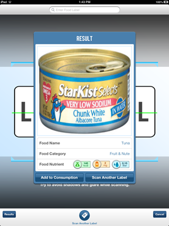
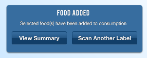

Food items can be tracked by capturing a photo of their label. To capture a food label, click on the camera icon from the Summary page:
Now, click on the "Capture Food Label" button:

Using the iPad camera, take a photo of the food label.

The application will process the scanned label and display a match on the screen:

Click the "Add to Consumption" button if the result is correct and you would like to record it. There is also the option to scan another label by clicking the "Scan Another Label" button.
Finally, to record the food item to your consumption history select the scanned food items on the results page (a red cherkmark will appear on items you select). Once you have selected all the food items you'd like to record, click the "Add to Consumption" button and the records will be saved:

NOTE: This current version of the ISS FIT application does not include object recognition so the images will need to be sent to the Earth lab before their nutrition content can be determined and included in calculated totals. Also, this data will not be reflected in daily nutrient totals in the ISS FIT application.